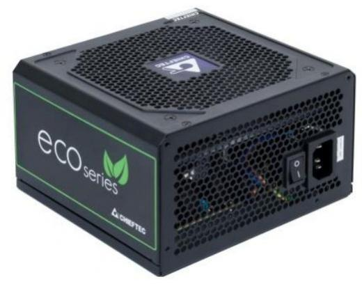
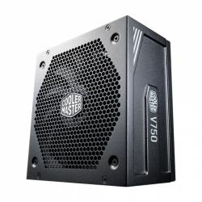

Tápegység
CHIEFTEC ECO 600W Bronze

Műszaki előírások
Tápegység típusa: Fix kábelezésű tápegység
Tápegység teljesítménye: 600 W
Hatásfok: 80+ Bronze
PFC: Aktív
Ventilátor mérete: 120 mm
Max. áramfelvétel +3,3V :22 A
Max. áramfelvétel +5V :22 A
Max. áramfelvétel +12V1 :45 A
Leírás:
Az ECO név egyenlő a maximális hatékonysággal, az ökológiai értékekkel és a tápegységek új korszakával. Megbízható, modern tápegység, így megfelel az ENERGY STAR 5.0 követelményeinek.
Cooler Master V750 GOLD V2

Műszaki előírások
Tápegység típusa: Moduláris tápegység
Tápegység teljesítménye :750 W
Hatásfok: 80+ Gold
PFC: Aktív
Ventilátor mérete :135 mm
Max. áramfelvétel +3,3V: 20 A
Max. áramfelvétel +5V: 20 A
Max. áramfelvétel +12V1: 63 A
Leírás:
A tápegység hatékonysága azért fontos, mert közvetlenül befolyásolja a rendszer teljesítményét és a villanyszámlát. A hatékonysági besorolás nem tükrözi a tápegység minőségét vagy megbízhatóságát. Csak azt tükrözi, hogy a készülék mennyire képes áramot továbbítani a faltól az alkatrészekhez.